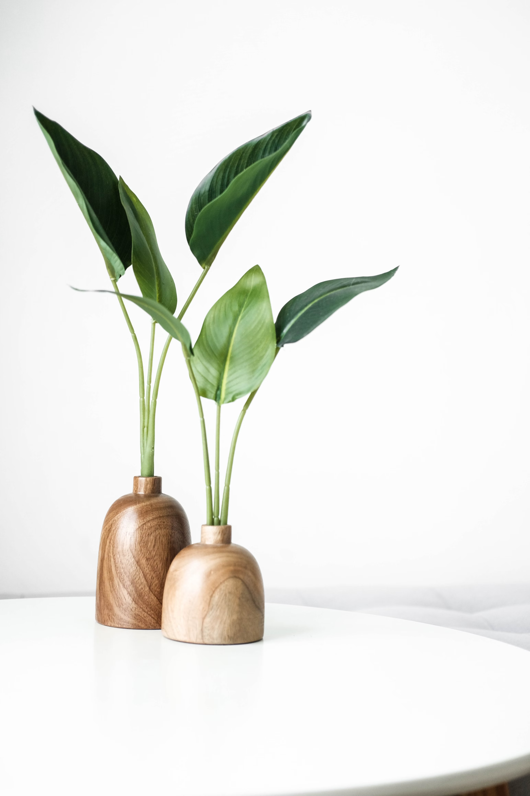
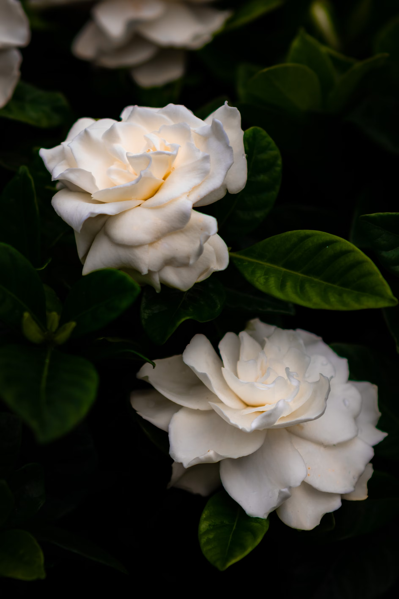
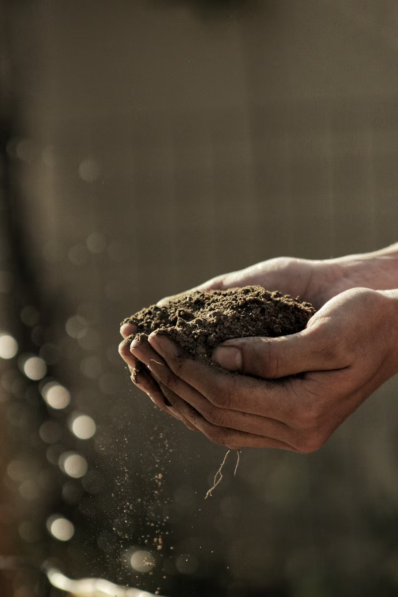

Beautiful leafy greens

These ones are suited for people who does not want to spend a lot of time caring for their plants but still want to fill their home with beautiful plants.
Flowers for your beginner garden

These are some of the flowers that can easily be managed by a beginner who wants to grow a fantastic flower garden
Looking for a challenge

The flowers that are considered the hardest ones to make grow. They will take a lot of time and effort but the lovely flowers will be worth it.
Fertilizer

To be able to grow your plants to their full potential you might need to use fertilizers. There are a lot to choose from and it can be difficult.
Soil

There are varieties of soil you can buy when you want to start building your garden. Here you can learn more about which one to choose for your purposes.
For the beginner

Learn basic gardening with these tasks.
For the ambitious

Become a flower expert with this online course.